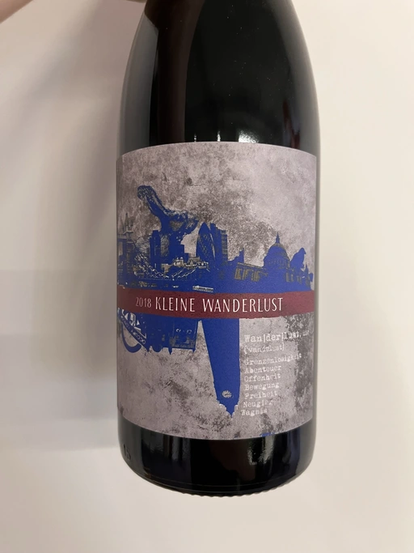

- Type
- Red Still, Dry
- Producer
- 2Naturkinder
- Vintage
- 2018
- Location
- Germany, Deutscher Wein
- Grapes
- Regent, Pinot Gris
- Alcohol
- 10.5
- Sugar
- NA
- Price
- 545 UAH, 620 UAH
- Cellar
- N/A
Blend of Regent (85%) and destemmed macerated Grauburgunder (15%).
Ratings
2022-10-11 - 5.50
An intriguing blend of Regent (85%) and Grauburgunder (15%). The result is rather disappointing. Simple aroma: plum, red forest berries, sour cherry. But the problem lies within flat and unbalanced taste. It lacks volume to soften the acidity. Shame.